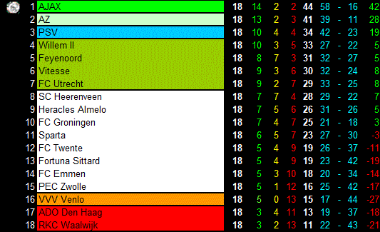

AZ staat op een keurige 2e plek met 3 punten achter op koploper AJAX.

AZ heeft dit seizoen al 3 keer de traditionele top 3 weten te verslaan.
Feyenoord-AZ 0-3
PSV-AZ 0-4
AZ-Ajax 1-0
Technisch Directeur Robert Eenhoorn heeft laatst op de nieuwjaarsreceptie vertelt
dat het een mooi seizoen kan worden als AZ blijft winnen in de maanden Januari, Februari en Maart.
Als ze 1e of 2e worden dan wordt dat een bijzondere prestatie en brengt dit team na een kleine 10 jaar
weer de Champions League terug in Alkmaar en misschien wel zelfs het kampioenschap.